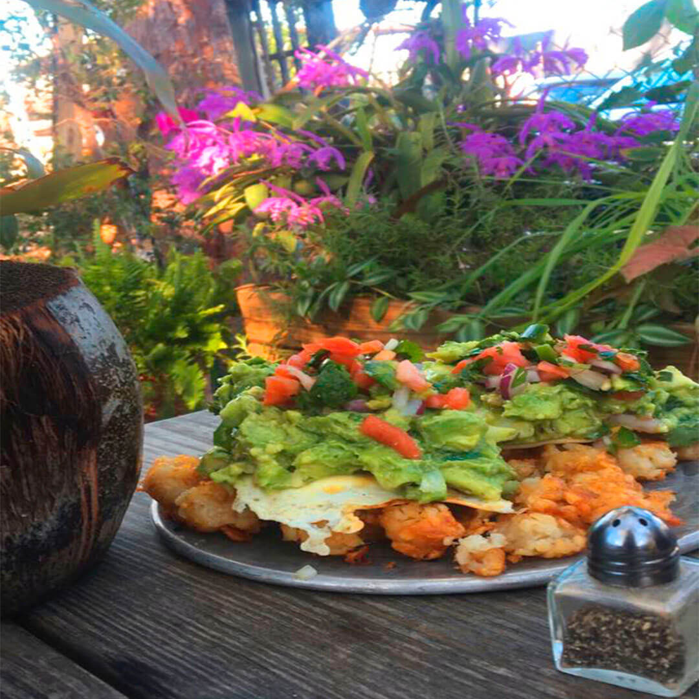

Avocado toast
This is a recipe of an Avocado toast we have first tried at Alchemist cafe in Miami. Enjoy this non-classic build.
Ingridients:
- Multi-grain bread
- 1 Avocado
- 2 teeth of garlic
- Small onion (half)
- Pressed lemon juice (half of a lemon)
- Little bit of parceley or cilantro
Steps
- First, prepare bread. Add a little bit of oil to the pan and fry a piece of bread from both sides just to make a nice crust.
- Chop avocado into small pieces 1x1cm or less. Put those pieces into glass or cup and bland them with a fork.
- Chop onion and garlic into very very small pieces and add this mix to the glass with chopped avocado.
- Add lemon juice and mix everything
- Put the mix onto the bread and finalize with chopped parceley.
ENJOY.